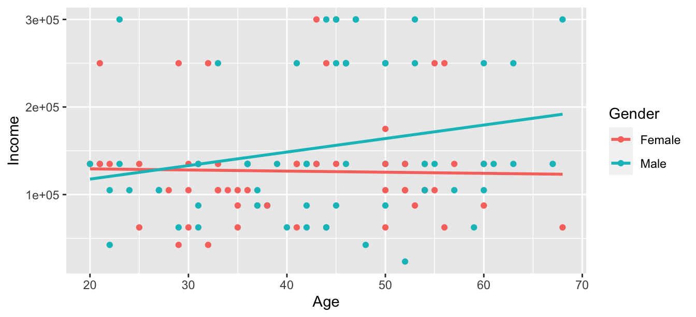

Chapter 11 Continuous Response II
Earlier we introduced ideas related to modeling for explanation, in particular that the goal of modeling is to make explicit the relationship between some outcome variable \(y\) and some explanatory variable \(x\). While there are many approaches to modeling, we focused on one particular technique: linear regression, one of the most commonly used and easy-to-understand approaches to modeling. To keep things simple, we only considered models with one explanatory \(x\) variable that was either numerical or categorical.
In this chapter on multiple regression, we’ll start considering models that include more than one explanatory variable \(x\). You can imagine when trying to model a particular outcome variable, like annual incomes or life expectancy, that it would be useful to include more than just one explanatory variable’s worth of information.
Since our regression models will now consider more than one explanatory variable, the interpretation of the associated effect of any one explanatory variable must be made in conjunction with the other explanatory variables included in your model. Let’s begin by loading all the necessary packages for this chapter.
library(tidyverse)
library(broom)
library(skimr)
library(ISLR)
library(fivethirtyeight)
library(gt)
library(rsample)
library(PPBDS.data)
library(gapminder)
library(moderndive)11.1 Income and Gender: One numerical and one categorical explanatory variable
Recall the trains dataset, which examines the immigration attitudes of daily commuters in a predominantly white Massachusetts town. The dataset provides demographic information for its subjects, as well as data relevant to the experiment. In this section, let’s focus on the demographic data, namely income, age, and gender. Our outcome variable will be income, a continuous variable, and our two explanatory variables will be age and gender.
Could it be that subjects who are older earn higher incomes, perhaps because they have had time to climb up the career ladder? Are there differences in incomes for subjects of the same age, but of different genders? What can we predict for the income of, say, a 30-year-old woman in this town? We’ll answer these questions by modeling the relationship between these variables using multiple regression, where we have:
- A numerical outcome variable \(y\), the subject’s annual income, and
- Two explanatory variables:
- A numerical explanatory variable \(x_1\), the subject’s age.
- A categorical explanatory variable \(x_2\), the subject’s gender.
11.1.1 Exploratory data analysis
To keep things simple, let’s select() only the subset of the variables we’ll consider in this chapter, and save this data in a new data frame called earnings.
Let’s first look at the raw data values by using the glimpse() function from the dplyr package:
## Rows: 115
## Columns: 3
## $ gender <chr> "Female", "Female", "Male", "Male", "Male", "Female", "Female"…
## $ age <dbl> 31, 34, 63, 45, 55, 37, 53, 36, 54, 42, 33, 50, 24, 40, 53, 50…
## $ income <dbl> 135000, 105000, 135000, 300000, 135000, 87500, 87500, 135000, …Let’s also display a random sample of 5 rows of the data, with each row corresponding to a subject. Due to the random nature of the sampling, you will likely end up with a different subset of 5 rows. The set.seed() function allows you to “randomly” obtain the same 5 rows if you set the same number as the seed. In this case, we’ve set the seed to 1, arbitrarily.
| A random sample of 5 out of the 115 subjects | ||
|---|---|---|
| gender | age | income |
| Female | 56 | 250000 |
| Female | 55 | 105000 |
| Female | 31 | 135000 |
| Male | 48 | 42500 |
| Female | 21 | 250000 |
Before we compute summary statistics, let’s change the variable type of gender from ‘character’ to ‘factor.’9 This is because, at the time, the study only offered two responses to gender. Because there are only two categories, we can factorize the variable, which tells R that these are categories.
Now that we’ve looked at the raw values in our earnings data frame and got a sense of the data, let’s compute summary statistics. As done before, let’s use the skim() function from skimr.
| Name | Piped data |
| Number of rows | 115 |
| Number of columns | 3 |
| _______________________ | |
| Column type frequency: | |
| factor | 1 |
| numeric | 2 |
| ________________________ | |
| Group variables | None |
Variable type: factor
| skim_variable | n_missing | complete_rate | ordered | n_unique | top_counts |
|---|---|---|---|---|---|
| gender | 0 | 1 | FALSE | 2 | Mal: 64, Fem: 51 |
Variable type: numeric
| skim_variable | n_missing | complete_rate | mean | sd | p0 | p25 | p50 | p75 | p100 | hist |
|---|---|---|---|---|---|---|---|---|---|---|
| age | 0 | 1 | 42.37 | 12.20 | 20 | 33 | 43 | 52 | 68 | ▆▇▇▇▃ |
| income | 0 | 1 | 141813.04 | 74476.64 | 23500 | 87500 | 135000 | 135000 | 300000 | ▅▇▇▁▆ |
We can see that there were 64 male subjects and 51 female subjects. The mean age of the subjects was 42.4 years old, with a roughly even age distribution save for the oldest group. The average income is $141,813, which is exceptionally high for the United States. Let’s keep in mind the environmental context of the study - a wealthy, predominantly white town in the Northeast.
Now, let’s compute the correlation coefficient between our two numerical variables: income and age. Recall that correlation coefficients only exist between numerical variables. We observe that they are “weakly positively” correlated.
## [1] 0.148Let’s now create a visualization to display the relationship between the outcome variable income and the explanatory variable age. Since both variables are numerical, we’ll use a scatterplot to display their relationship. We can incorporate the categorical variable gender by adding color = gender to the aes()thetic mapping.
earnings %>%
ggplot(aes(x = age, y = income, color = gender)) +
geom_point() +
labs(x = "Age", y = "Income", color = "Gender") +
geom_smooth(method = "lm", se = FALSE) FIGURE 11.1: Colored scatterplot of relationship between age and income.

Observe that the geom_smooth(method = "lm", se = FALSE) layer automatically fits a different regression line for each group.
We notice some interesting trends. First, there is a wide range of income, with both men and women reporting the lowest and highest incomes. Second, the slope of the regression line for age for female subjects seems to be slightly negative, whereas that of male subjects is positive. It seems like female subjects are paying a penalty for age10 Pun unintended., whereas male subjects seem to benefit from older age.
11.1.2 Interaction model
Let’s now quantify the relationship of our outcome variable \(y\) and the two explanatory variables using one type of multiple regression model known as an interaction model. We’ll explain where the term “interaction” comes from at the end of this section.
In particular, we’ll write out the equation of the two regression lines using the values from a regression table. Before we do this, however, let’s go over a brief refresher of regression when you have a categorical explanatory variable \(x\).
Recall this regression model for countries’ life expectancies as a function of which continent the country was in. In other words, we had a numerical outcome variable \(y\) = lifeExp and a categorical explanatory variable \(x\) = continent which had 5 levels: Africa, Americas, Asia, Europe, and Oceania.
| Regression table for life expectancy as a function of continent | |||
|---|---|---|---|
| term | estimate | conf.low | conf.high |
| (Intercept) | 54.80604 | 52.77829 | 56.83379 |
| continentAmericas | 18.80208 | 15.24339 | 22.36077 |
| continentAsia | 15.92245 | 12.66808 | 19.17682 |
| continentEurope | 22.84256 | 19.49012 | 26.19500 |
| continentOceania | 25.91346 | 15.37696 | 36.44996 |
Recall our interpretation of the estimate column. Since Africa was the “baseline for comparison” group, the intercept term corresponds to the mean life expectancy for all countries in Africa of 54.8 years. The other four values of estimate correspond to “offsets” relative to the baseline group. So, for example, the “offset” corresponding to the Americas is +18.8 as compared to the baseline for comparison group Africa. In other words, the average life expectancy for countries in the Americas is 18.8 years higher. Thus the mean life expectancy for all countries in the Americas is 54.8 + 18.8 = 73.6. The same interpretation holds for Asia, Europe, and Oceania.
Going back to our multiple regression model for income using age and gender, we generate the regression table using a two-step approach: we first “fit” the model using the lm() “linear model” function and then we apply the tidy() function. This time, however, our model formula won’t be of the form y ~ x, but rather of the form y ~ x1 * x2. In other words, our two explanatory variables x1 and x2 are separated by a * sign:
# Fit regression model:
earnings_model_interaction <- lm(income ~ age * gender, data = earnings)
# Get regression table:
earnings_model_interaction %>%
tidy(conf.int = TRUE) %>%
select(term, estimate, conf.low, conf.high)| Regression table for interaction model | |||
|---|---|---|---|
| term | estimate | conf.low | conf.high |
| (Intercept) | 131,906.245 | 60,735.017 | 203,077.473 |
| age | −127.856 | −1,793.052 | 1,537.341 |
| genderMale | −45,118.656 | −143,261.731 | 53,024.418 |
| age:genderMale | 1,671.384 | −568.575 | 3,911.342 |
There are four rows of values corresponding to a different predictor. Female subjects are the baseline group for comparison, as the other predictors display the additional “offset” amount for males. Thus, intercept is the intercept for only the female subjects.
This holds similarly for age. It is the slope for age for only the female subjects. Thus, the regression line in the model has an intercept of 1.319062410^{5} and slope for age of -127.8557339. Remember that for this data, while the intercept has a mathematical interpretation, it has no practical interpretation since subjects can’t have zero age.
What about the intercept and slope for age of the male subjects? This is where our notion of “offsets” comes into play once again. The value for gendermale is the offset in intercept for male subjects relative to female subjects. The intercept for the male subjects is intercept + gendermale = 1.319062410^{5} + -4.511865610^{4} = intercept_male. Similarly, age:gendermale = 1671.3835339 is not the slope for age for the male subjects, but rather the offset in slope for the male subjects. Therefore, the slope for age for the male subjects is age + age:gendermale \(=\) -127.8557339 1671.3835339 \(=\) 1543.5278.
Let’s summarize these values in Table ?? and focus on the two slopes for age:
| Comparison of intercepts and slopes for interaction model | ||
|---|---|---|
| Gender | Intercept | Slope for age |
| Female subjects | 131,906.000 | −128.000 |
| Male subjects | 86,788.000 | 1,671.000 |
Since the slope for age for the female subjects was -127.8557, it means that on average, a female subject who is a year older would have an income that is -127.8557 dollars lower, whereas the corresponding associated change for males was on average an increase of 1543.5278 dollars. This may or may not be consistent with the previous observation that this model is suggesting that age impacts earnings for female subjects more than for male subjects. It is difficult to say because of the opposite signs of each slope, and the difference between intercepts. We will revisit this question later.
Note that our regression table included the confidence interval bounds generated from tidy(conf.int = TRUE). Let’s reassure ourselves that they are similar to what we would get from the bootstrap samples.
The process is somewhat more involved because we have multiple coefficients around which we would like to construct confidence intervals.
library(rsample)
x <- earnings %>%
bootstraps(times = 1000) %>%
mutate(mod = map(splits, ~ lm(income ~ age * gender, data = .)),
reg_results = map(mod, ~ tidy(.)))Let’s take advantage of unnest() to reshape our data so that the unit of analysis is a replicate-term:
## # A tibble: 4,000 x 8
## splits id mod term estimate std.error statistic p.value
## <list> <chr> <lis> <chr> <dbl> <dbl> <dbl> <dbl>
## 1 <split [115… Bootstrap… <lm> (Interce… 138727. 34882. 3.98 1.25e-4
## 2 <split [115… Bootstrap… <lm> age -377. 882. -0.427 6.70e-1
## 3 <split [115… Bootstrap… <lm> genderMa… -65001. 46399. -1.40 1.64e-1
## 4 <split [115… Bootstrap… <lm> age:gend… 2316. 1156. 2.00 4.75e-2
## 5 <split [115… Bootstrap… <lm> (Interce… 142668. 35271. 4.04 9.70e-5
## 6 <split [115… Bootstrap… <lm> age -380. 792. -0.479 6.33e-1
## 7 <split [115… Bootstrap… <lm> genderMa… -46134. 47424. -0.973 3.33e-1
## 8 <split [115… Bootstrap… <lm> age:gend… 1797. 1062. 1.69 9.34e-2
## 9 <split [115… Bootstrap… <lm> (Interce… 123126. 33480. 3.68 3.65e-4
## 10 <split [115… Bootstrap… <lm> age 411. 799. 0.514 6.08e-1
## # … with 3,990 more rowsNow we have 4,000 rows, which are 1,000 replicates apiece for each of the terms in our regression.
It is now a simple matter to group_by(term) and summarize() to create our confidence intervals:
x %>%
unnest(reg_results) %>%
group_by(term) %>%
summarize(conf.low = quantile(estimate, 0.025),
conf.high = quantile(estimate, 0.975))## # A tibble: 4 x 3
## term conf.low conf.high
## <chr> <dbl> <dbl>
## 1 (Intercept) 69420. 190794.
## 2 age -1438. 1294.
## 3 age:genderMale -361. 3682.
## 4 genderMale -135116. 50400.For comparison, let’s take another look at the results from tidy(conf.int = TRUE) which we saw before:
| Regression table for interaction model | |||
|---|---|---|---|
| term | estimate | conf.low | conf.high |
| (Intercept) | 131,906.245 | 60,735.017 | 203,077.473 |
| age | −127.856 | −1,793.052 | 1,537.341 |
| genderMale | −45,118.656 | −143,261.731 | 53,024.418 |
| age:genderMale | 1,671.384 | −568.575 | 3,911.342 |
They are very similar, so we will keep using tidy(conf.int = TRUE) to save time.
Let’s now write the equation for our regression lines, which we can use to compute our fitted values \(\widehat{y} = \widehat{\text{score}}\). Here is the final equation, which we will break down in a second.
\[ \begin{aligned} \widehat{y} = \widehat{\text{score}} &= b_0 + b_{\text{age}} \cdot \text{age} + b_{\text{male}} \cdot \mathbb{1}_{\text{is male}}(x) + b_{\text{age,male}} \cdot \text{age} \cdot \mathbb{1}_{\text{is male}}\\ &= 131906 -128 \cdot \text{age} - 45119 \cdot \mathbb{1}_{\text{is male}}(x) 1671 \cdot \text{age} \cdot \mathbb{1}_{\text{is male}} \end{aligned} \] First, let’s use an indicator variable, \({1}_{\text{is male}}\), that assigns a value of 0 or 1 based on whether the professor is male or not.
\[ \mathbb{1}_{\text{is male}}(x) = \left\{ \begin{array}{ll} 1 & \text{if } \text{subject } x \text{ is male} \\ 0 & \text{otherwise}\end{array} \right. \]
Second, let’s create coefficients in the previous equation from values in the estimate column in Table ??:
-
\(b_0\) is the
intercept= 131906 for the female subjects -
\(b_{\text{age}}\) is the slope for
age= -128 for the female subjects - \(b_{\text{male}}\) is the offset in intercept = -45119 for the male subjects
- \(b_{\text{age,male}}\) is the offset in slope for age = 1671 for the male subjects
Let’s put this all together and compute the fitted value \(\widehat{y} = \widehat{\text{score}}\) for female subjects. Since for female subjects \(\mathbb{1}_{\text{is male}}(x)\) = 0, the previous equation becomes
\[ \begin{aligned} \widehat{y} = \widehat{\text{score}} &= 131906 - 128 \cdot \text{age} - 0.446 \cdot 0 + 1671 \cdot \text{age} \cdot 0\\ &= 131906 - 128 \cdot \text{age} - 0 + 0\\ &= 131906 - 128 \cdot \text{age}\\ \end{aligned} \]
which is the equation of the red regression line corresponding to the female subjects. Correspondingly, since for male subjects \(\mathbb{1}_{\text{is male}}(x)\) = 1, the previous equation becomes
\[ \begin{aligned} \widehat{y} = \widehat{\text{score}} &= 131906 - 128 \cdot \text{age} - 45119 + 1671 \cdot \text{age}\\ &= (131906 - 128) + (- 128 + 1671) * \text{age}\\ &= 131906 + 1544 \cdot \text{age}\\ \end{aligned} \]
which is the equation of the re regression line corresponding to the male subjects in Table ??.
11.1.3 Interpreting regression coefficients with interactions
Before we end this section, we explain why we refer to this type of model as an “interaction model.” The \(b_{\text{age,male}}\) term in the equation for the fitted value \(\widehat{y}\) = \(\widehat{\text{score}}\) is what’s known in statistical modeling as an “interaction effect.” We say there is an interaction effect if the associated effect of one variable depends on the value of another variable. That is to say, the two variables are “interacting” with each other. Here, the associated effect of the variable age depends on the value of the other variable gender. The difference in slopes for age of +1671 of male subjects relative to female subjects shows this.
Another way of thinking about interaction effects as follows. For a given person, there might be an associated effect of their age by itself, there might be an associated effect of their gender by itself, but when age and gender are considered together there might be an additional effect above and beyond the two individual effects.
Can we interpret these coefficients using the Rubin Causal Model? In order to interpet a multiple regression causally, you first need to decide what you are considering as the treatment variable. Let’s say that we are conceptualizing gender as the treatment variable. Back in the simple linear regression context, we noted that you cannot interpret the regression coefficient as the average treatment effect if there are any confounding variables – variables that are correlated both with the treatment variable and the potential outcomes. Multiple regression allows for consideration of confounding variables, but only in the situation where you have included all confounders can you justify a causal interpretation of the regression.
For our teaching score model, then, we can interpret the effect of gender causally only if other than age measured in years there are no variables that correlate with a teacher’s gender and the teacher’s potential outcomes. So if age is the only confounding variable, we can interpret the model causally. This is most likely not the case, but let’s take on this assumption to see what we get:
## Warning: 'html' is deprecated.
## Use 'xml2::read_html' instead.
## See help("Deprecated")
## Warning: 'html' is deprecated.
## Use 'xml2::read_html' instead.
## See help("Deprecated")| Subject | <!DOCTYPE html PUBLIC "-//W3C//DTD HTML 4.0 Transitional//EN" "http://www.w3.org/TR/REC-html40/loose.dtd"> <html><body><i>Y_{gender = F}</i></body></html> | <!DOCTYPE html PUBLIC "-//W3C//DTD HTML 4.0 Transitional//EN" "http://www.w3.org/TR/REC-html40/loose.dtd"> <html><body><i>Y_{gender = M}</i></body></html> |
|---|---|---|
| Alice | 4 | ? |
| Bob | ? | 3.75 |
| Charlie | ? | 4.1 |
Now, following what we saw in the last chapter, we’ll want to fill in the missing potential outcomes by using our estimate of the ATE. But in an interaction model, this is is more complicated, because we have heterogeneous treatment effects. That means that we don’t just have one estimate of the ATE, but rather we have an estimate of the ATE for each age. So we need to know the age of each subject:
## Warning: 'html' is deprecated.
## Use 'xml2::read_html' instead.
## See help("Deprecated")
## Warning: 'html' is deprecated.
## Use 'xml2::read_html' instead.
## See help("Deprecated")
## Warning: 'html' is deprecated.
## Use 'xml2::read_html' instead.
## See help("Deprecated")
## Warning: 'html' is deprecated.
## Use 'xml2::read_html' instead.
## See help("Deprecated")| <!DOCTYPE html PUBLIC "-//W3C//DTD HTML 4.0 Transitional//EN" "http://www.w3.org/TR/REC-html40/loose.dtd"> <html><body><b>Subject</b></body></html> | <!DOCTYPE html PUBLIC "-//W3C//DTD HTML 4.0 Transitional//EN" "http://www.w3.org/TR/REC-html40/loose.dtd"> <html><body><b>age</b></body></html> | <!DOCTYPE html PUBLIC "-//W3C//DTD HTML 4.0 Transitional//EN" "http://www.w3.org/TR/REC-html40/loose.dtd"> <html><body><i>Y_{gender = F}</i></body></html> | <!DOCTYPE html PUBLIC "-//W3C//DTD HTML 4.0 Transitional//EN" "http://www.w3.org/TR/REC-html40/loose.dtd"> <html><body><i>Y_{gender = M}</i></body></html> |
|---|---|---|---|
| Alice | 30 | 4 | ? |
| Bob | 45 | ? | 3.75 |
| Charlie | 60 | ? | 4.1 |
We could use the regression equation to get the point estimate of the ATE for each age:
\[ \begin{aligned} \widehat{\text{ATE}} &= - 0.446 \cdot \mathbb{1}_{\text{is male}}(x) + 0.014 \cdot \text{age} \cdot \mathbb{1}_{\text{is male}} \end{aligned} \]
But that still does not give us an estimate of the uncertainty around that interval.
Thankfully, there is an easy way to get that using lm() and tidy(). Recall that our coefficient on gendermale reflects the effect for subjects whose age is 0. If we recenter age so 0 is equal to the age we are interested in, then we can use both the coefficient and confidence inteveral around gendermale to get the confidence interval for that age. For example, here is how we would get the coefficient and confidence interval for subjects whose age is 30:
lm(income ~ I(age - 30) * gender, data = earnings) %>%
tidy(conf.int = TRUE) %>%
filter(term == "gendermale") %>%
select(term, estimate, conf.low, conf.high)## # A tibble: 0 x 4
## # … with 4 variables: term <chr>, estimate <dbl>, conf.low <dbl>,
## # conf.high <dbl>But there’s no reason to do this just for one age. We can use map_* functions and list columns to get the coefficient on gendermale and the confidence interval for an arbitrary range of ages, say 20 to 90:
gendermale_coefs <- tibble(ages = 20:90) %>%
# First, we get our regression results for each age:
mutate(mod = map(ages, ~ lm(income ~ I(age - .) * gender, data = earnings)),
reg_results = map(mod, ~ tidy(., conf.int = TRUE)),
# We only care about the term "gendermale":
reg_gendermale = map(reg_results, ~ filter(., term == "genderMale")),
# Now, let's get the estimates and CIs:
estimate = map_dbl(reg_gendermale, ~ pull(., estimate)),
conf.low = map_dbl(reg_gendermale, ~ pull(., conf.low)),
conf.high = map_dbl(reg_gendermale, ~ pull(., conf.high)))
gendermale_coefs## # A tibble: 71 x 7
## ages mod reg_results reg_gendermale estimate conf.low conf.high
## <int> <list> <list> <list> <dbl> <dbl> <dbl>
## 1 20 <lm> <tibble [4 × 7]> <tibble [1 × 7]> -11691. -68180. 44798.
## 2 21 <lm> <tibble [4 × 7]> <tibble [1 × 7]> -10020. -64557. 44518.
## 3 22 <lm> <tibble [4 × 7]> <tibble [1 × 7]> -8348. -60957. 44260.
## 4 23 <lm> <tibble [4 × 7]> <tibble [1 × 7]> -6677. -57382. 44029.
## 5 24 <lm> <tibble [4 × 7]> <tibble [1 × 7]> -5005. -53836. 43825.
## 6 25 <lm> <tibble [4 × 7]> <tibble [1 × 7]> -3334. -50322. 43654.
## 7 26 <lm> <tibble [4 × 7]> <tibble [1 × 7]> -1663. -46844. 43519.
## 8 27 <lm> <tibble [4 × 7]> <tibble [1 × 7]> 8.70 -43407. 43424.
## 9 28 <lm> <tibble [4 × 7]> <tibble [1 × 7]> 1680. -40015. 43375.
## 10 29 <lm> <tibble [4 × 7]> <tibble [1 × 7]> 3351. -36674. 43377.
## # … with 61 more rowsNote how closely this code follows code we’ve seen before for using map_* functions to run multiple models, except now we are using I(age - .) in the lm() call to recenter each regression by ages.
The heterogeneous treatment effects are easiest to understand if plotted visually:
gendermale_coefs %>%
ggplot(aes(x = ages, y = estimate, ymin = conf.low, ymax = conf.high)) +
geom_point() +
geom_errorbar() +
theme_minimal() +
labs(x = "Age",
y = "Effect of being male on incomes",
title = "Predicting teaching incomes with gender and age",
subtitle = "As age increases, being male is more associated with higher teaching incomes")
Note that our interaction model constrains the heterogeneous treatment effects to be linear with respect to age. If that isn’t a good model of the relationship, our model may make poor predictions.
Finally, let’s extract the values we need for our potential outcomes table:
gendermale_coefs %>%
filter(ages %in% c(30, 45, 60)) %>%
select(ages, estimate, conf.low, conf.high)## # A tibble: 3 x 4
## ages estimate conf.low conf.high
## <int> <dbl> <dbl> <dbl>
## 1 30 5023. -33392. 43437.
## 2 45 30094. 2089. 58098.
## 3 60 55164. 6681. 103648.Note that we’ll have to reverse the sign on our estimate for Bob and Charlie, because for them, the counterfactual is that gender is "female".
## Warning: 'html' is deprecated.
## Use 'xml2::read_html' instead.
## See help("Deprecated")
## Warning: 'html' is deprecated.
## Use 'xml2::read_html' instead.
## See help("Deprecated")
## Warning: 'html' is deprecated.
## Use 'xml2::read_html' instead.
## See help("Deprecated")
## Warning: 'html' is deprecated.
## Use 'xml2::read_html' instead.
## See help("Deprecated")
## Warning: 'html' is deprecated.
## Use 'xml2::read_html' instead.
## See help("Deprecated")| <!DOCTYPE html PUBLIC "-//W3C//DTD HTML 4.0 Transitional//EN" "http://www.w3.org/TR/REC-html40/loose.dtd"> <html><body><b>Subject</b></body></html> | <!DOCTYPE html PUBLIC "-//W3C//DTD HTML 4.0 Transitional//EN" "http://www.w3.org/TR/REC-html40/loose.dtd"> <html><body><b>age</b></body></html> | <!DOCTYPE html PUBLIC "-//W3C//DTD HTML 4.0 Transitional//EN" "http://www.w3.org/TR/REC-html40/loose.dtd"> <html><body><i>Y_{gender = F}</i></body></html> | <!DOCTYPE html PUBLIC "-//W3C//DTD HTML 4.0 Transitional//EN" "http://www.w3.org/TR/REC-html40/loose.dtd"> <html><body><i>Y_{gender = M}</i></body></html> | <!DOCTYPE html PUBLIC "-//W3C//DTD HTML 4.0 Transitional//EN" "http://www.w3.org/TR/REC-html40/loose.dtd"> <html><body><i>ATE</i></body></html> |
|---|---|---|---|---|
| Alice | 30 | 4 | 3.96 (3.75, 4.17) | -0.04 (-0.25, 0.17) |
| Bob | 45 | 3.59 (3.48, 3.69) | 3.75 | -0.16 (-0.27, -0.06) |
| Charlie | 60 | 3.73 (3.56, 3.91) | 4.1 | -0.37 (-0.54, -0.19) |
Again, however, one should always think carefully about whether a causal interpretation of a regression model is plausible. Is it really the case that age is only confounder of the relationship between gender and teaching incomes? Likely it is not, and therefore we should not interpret the results of this regression causally.
EC: Here, we can talk about
11.1.4 Parallel slopes model
Another model we can use to visualize regressing on one numerical variable and one categorical variable is known as a parallel slopes model. Unlike interaction models where the regression lines can have different intercepts and different slopes, parallel slopes models still allow for different intercepts but force all lines to have the same slope. This is done by using the indicator variable we previously introduced, \({1}_{\text{is male}}\). Each line will correspond to an outcome of this indicator variable. Let’s visualize the best-fitting parallel slopes model to earnings.
A function called geom_parallel_slopes() in the moderndive package allows us to plot the parallel slopes model for teaching income. Notice how the code is identical to the code that produced the visualization of the interaction model previously, but now the geom_smooth(method = "lm", se = FALSE) layer is replaced with geom_parallel_slopes(se = FALSE).
ggplot(earnings, aes(x = age, y = income, color = gender)) +
geom_point() +
labs(x = "Age", y = "Income", color = "Gender") +
geom_parallel_slopes(se = FALSE)FIGURE 11.2: Parallel slopes model of income with age and gender.

Observe that we now have parallel lines corresponding to the female and male subjects, respectively: here they have the same negative slope. This is telling us that, in general, subjects who are older will tend to receive lower teaching incomes than subjects who are younger. Furthermore, since the lines are parallel, the associated penalty for being older is assumed to be the same for both female and male subjects.
However, observe also that these two lines have different intercepts as evidenced by the fact that the blue line corresponding to the male subjects is higher than the red line corresponding to the female subjects. This is telling us that irrespective of age, female subjects tended to receive lower teaching incomes than male subjects.
In order to obtain the precise numerical values of the two intercepts and the single common slope, we once again “fit” the model using the lm() “linear model” function and then apply the tidy() function. However, unlike the interaction model which had a model formula of the form y ~ x1 * x2, our model formula is now of the form y ~ x1 + x2. In other words, our two explanatory variables x1 and x2 are separated by a + sign:
# Fit regression model:
earnings_model_parallel_slopes <- lm(income ~ age + gender, data = earnings)
# Get regression table:
earnings_model_parallel_slopes %>%
tidy(conf.int = TRUE) %>%
select(term, estimate, conf.low, conf.high)## Warning: 'html' is deprecated.
## Use 'xml2::read_html' instead.
## See help("Deprecated")
## Warning: 'html' is deprecated.
## Use 'xml2::read_html' instead.
## See help("Deprecated")
## Warning: 'html' is deprecated.
## Use 'xml2::read_html' instead.
## See help("Deprecated")
## Warning: 'html' is deprecated.
## Use 'xml2::read_html' instead.
## See help("Deprecated")| Regression table for parallel slopes model | |||
|---|---|---|---|
| <!DOCTYPE html PUBLIC "-//W3C//DTD HTML 4.0 Transitional//EN" "http://www.w3.org/TR/REC-html40/loose.dtd"> <html><body><b>term</b></body></html> | <!DOCTYPE html PUBLIC "-//W3C//DTD HTML 4.0 Transitional//EN" "http://www.w3.org/TR/REC-html40/loose.dtd"> <html><body><b>estimate</b></body></html> | <!DOCTYPE html PUBLIC "-//W3C//DTD HTML 4.0 Transitional//EN" "http://www.w3.org/TR/REC-html40/loose.dtd"> <html><body><b>conf.low</b></body></html> | <!DOCTYPE html PUBLIC "-//W3C//DTD HTML 4.0 Transitional//EN" "http://www.w3.org/TR/REC-html40/loose.dtd"> <html><body><b>conf.high</b></body></html> |
| (Intercept) | 94,052.999 | 43,876.509 | 144,229.488 |
| age | 795.836 | −323.689 | 1,915.361 |
| genderMale | 25,235.821 | −2,142.584 | 52,614.227 |
Similarly to the regression table for the interaction model from Table ??, we have an intercept term corresponding to the intercept for the “baseline for comparison” female subject group and a gendermale term corresponding to the offset in intercept for the male subjects relative to female subjects. In other words, in Figure ?? the red regression line corresponding to the female subjects has an intercept of 4.484 while the blue regression line corresponding to the male subjects has an intercept of 4.484 + 0.191 = 4.675. Once again, since there aren’t any subjects of age 0, the intercepts only have a mathematical interpretation but no practical one.
Unlike in Table ??, however, we now only have a single slope for age of 795.8359. This is because the model dictates that both the female and male subjects have a common slope for age. This is telling us that an subject who is a year older than another subject received a teaching income that is on average 795.8359 units lower. This penalty for being of advanced age applies equally to both female and male subjects.
Let’s summarize these values in Table ??, noting the different intercepts but common slopes:
| Comparison of intercepts and slope for parallel slopes model | ||
|---|---|---|
| Gender | Intercept | Slope for age |
| Female subjects | 4.484 | −0.009 |
| Male subjects | 4.675 | −0.009 |
Let’s now write the equation for our regression lines, which we can use to compute our fitted values \(\widehat{y} = \widehat{\text{income}}\).
\[ \begin{aligned} \widehat{y} = \widehat{\text{score}} &= b_0 + b_{\text{age}} \cdot \text{age} + b_{\text{male}} \cdot \mathbb{1}_{\text{is male}}(x)\\ &= 4.484 -0.009 \cdot \text{age} + 0.191 \cdot \mathbb{1}_{\text{is male}}(x) \end{aligned} \]
Let’s put this all together and compute the fitted value \(\widehat{y} = \widehat{\text{income}}\) for female subjects. Since for female subjects the indicator function \(\mathbb{1}_{\text{is male}}(x)\) = 0, the previous equation becomes
\[ \begin{aligned} \widehat{y} = \widehat{\text{income}} &= 4.484 -0.009 \cdot \text{age} + 0.191 \cdot 0\\ &= 4.484 -0.009 \cdot \text{age} \end{aligned} \]
which is the equation of the red regression line in Figure ?? corresponding to the female subjects. Correspondingly, since for male subjects the indicator function \(\mathbb{1}_{\text{is male}}(x)\) = 1, the previous equation becomes
\[ \begin{aligned} \widehat{y} = \widehat{\text{income}} &= 4.484 -0.009 \cdot \text{age} + 0.191 \cdot 1\\ &= (4.484 + 0.191) - 0.009 \cdot \text{age}\\ &= 4.675 -0.009 \cdot \text{age} \end{aligned} \]
which is the equation of the blue regression line in Figure ?? corresponding to the male subjects.
Great! We’ve considered both an interaction model and a parallel slopes model for our data. Let’s compare the visualizations for both models side-by-side in Figure ??.
## `geom_smooth()` using formula 'y ~ x'FIGURE 11.3: Comparison of interaction and parallel slopes models.

At this point, you might be asking yourself: “Why would we ever use a parallel slopes model?” Looking at the left-hand plot in Figure ??, the two lines definitely do not appear to be parallel, so why would we force them to be parallel? For this data, we agree! It can easily be argued that the interaction model on the left is more appropriate. However, in the upcoming Subsection 11.3.6 on model selection, we’ll present an example where it can be argued that the case for a parallel slopes model might be stronger.
11.1.5 Observed/fitted values and residuals
For brevity’s sake, in this section we’ll only compute the observed values, fitted values, and residuals for the interaction model which we saved in earnings_model_interaction.
Say, you have an subject who identifies as female and is 36 years old. What fitted value \(\widehat{y}\) = \(\widehat{\text{income}}\) would our model yield? Say, you have another subject who identifies as male and is 59 years old. What would their fitted value \(\widehat{y}\) be?
We answer this question visually first for the female subject by finding the intersection of the red regression line and the vertical line at \(x\) = age = 36. We mark this value with a large red dot in Figure ??. Similarly, we can identify the fitted value \(\widehat{y}\) = \(\widehat{\text{income}}\) for the male subject by finding the intersection of the blue regression line and the vertical line at \(x\) = age = 59. We mark this value with a large blue dot in Figure ??.
## `geom_smooth()` using formula 'y ~ x'FIGURE 11.4: Fitted values for two new professors.

What are these two values of \(\widehat{y}\) = \(\widehat{\text{income}}\) precisely? We can use the equations of the two regression lines we computed in Subsection 11.1.2, which in turn were based on values from the regression table in Table ??:
- For all female subjects: \(\widehat{y} = \widehat{\text{income}} = 4.883 - 0.018 \cdot \text{age}\)
- For all male subjects: \(\widehat{y} = \widehat{\text{income}} = 4.437 - 0.004 \cdot \text{age}\)
So our fitted values would be: \(4.883 - 0.018 \cdot 36 = 4.25\) and \(4.437 - 0.004 \cdot 59 = 4.20\), respectively.
Now what if we want the fitted values not just for these two subjects, but for the subjects of all 463 courses included in the earnings data frame? Doing this by hand would be long and tedious! This is where the augment() function from the broom package can help: it will quickly automate the above calculations for all 463 courses. We present a preview of just the first 10 rows out of 463 in Table ??. Just like in the last chapter, we’ll use the .se.fit column to construct confidence intervals around our predicted values.
regression_points <- earnings_model_interaction %>%
augment() %>%
mutate(conf.low = .fitted - 2 * .se.fit,
conf.high = .fitted + 2 * .se.fit) %>%
select(income, age, gender, .fitted, conf.low, conf.high, .resid)
regression_points| Regression points (First 10 out of 463 courses) | ||||||
|---|---|---|---|---|---|---|
| income | age | gender | .fitted | conf.low | conf.high | .resid |
| 135000 | 31 | Female | 127943 | 101531 | 154355 | 7057 |
| 105000 | 34 | Female | 127559 | 104025 | 151093 | -22559 |
| 135000 | 63 | Male | 184030 | 149332 | 218727 | -49030 |
| 300000 | 45 | Male | 156246 | 137888 | 174605 | 143754 |
| 135000 | 55 | Male | 171682 | 146468 | 196895 | -36682 |
| 87500 | 37 | Female | 127176 | 105705 | 148646 | -39676 |
| 87500 | 53 | Female | 125130 | 96419 | 153841 | -37630 |
| 135000 | 36 | Male | 142355 | 120925 | 163784 | -7355 |
| 105000 | 54 | Female | 125002 | 95085 | 154919 | -20002 |
| 135000 | 42 | Male | 151616 | 133269 | 169963 | -16616 |
It turns out that the female subject of age 36 taught the first four courses, while the male subject taught the next 3. The resulting \(\widehat{y}\) = \(\widehat{\text{income}}\) fitted values are in the .fitted column. Furthermore, the augment() function also returns the residuals \(y-\widehat{y}\). Notice, for example, the first and fourth courses the female subject of age 36 taught had positive residuals, indicating that the actual incomes they received from students were greater than their fitted income of 4.25. On the other hand, the second and third courses this subject taught had negative residuals, indicating that the actual teaching scores they received from students were less than 4.25.
11.2 Credit card debt: two numerical explanatory variables
Let’s now switch gears and consider multiple regression models where instead of one numerical and one categorical explanatory variable, we now have two numerical explanatory variables. The dataset we’ll use is from An Introduction to Statistical Learning with Applications in R (ISLR), an intermediate-level textbook on statistical and machine learning (James et al. 2017James, Gareth, Daniela Witten, Trevor Hastie, and Robert Tibshirani. 2017. An Introduction to Statistical Learning: With Applications in R. First. New York, NY: Springer.). Its accompanying ISLR R package contains the datasets to which the authors apply various machine learning methods.
One frequently used dataset in this book is the Credit dataset, where the outcome variable of interest is the credit card debt of 400 individuals. Other variables like income, credit limit, credit rating, and age are included as well. Note that the Credit data is not based on real individuals’ financial information, but rather is a simulated dataset used for educational purposes.
In this section, we’ll fit a regression model where we have
- A numerical outcome variable \(y\), the cardholder’s credit card debt
- Two explanatory variables:
- One numerical explanatory variable \(x_1\), the cardholder’s credit limit
- Another numerical explanatory variable \(x_2\), the cardholder’s income (in thousands of dollars).
11.2.1 Exploratory data analysis
Let’s load the Credit dataset. To keep things simple let’s select() the subset of the variables we’ll consider in this chapter, and save this data in the new data frame credit_ch12. Notice our slightly different use of the select() verb here than we introduced in Subsection ??. For example, we’ll select the Balance variable from Credit but then save it with a new variable name debt. We do this because here the term “debt” is easier to interpret than “balance.”
library(ISLR)
credit_ch12 <- Credit %>%
as_tibble() %>%
select(ID, debt = Balance, credit_limit = Limit,
income = Income, credit_rating = Rating, age = Age)You can observe the effect of our use of select() in the first common step of an exploratory data analysis: looking at the raw values either in RStudio’s spreadsheet viewer or by using glimpse().
## Rows: 400
## Columns: 6
## $ ID <int> 1, 2, 3, 4, 5, 6, 7, 8, 9, 10, 11, 12, 13, 14, 15, 16, …
## $ debt <int> 333, 903, 580, 964, 331, 1151, 203, 872, 279, 1350, 140…
## $ credit_limit <int> 3606, 6645, 7075, 9504, 4897, 8047, 3388, 7114, 3300, 6…
## $ income <dbl> 14.89, 106.03, 104.59, 148.92, 55.88, 80.18, 21.00, 71.…
## $ credit_rating <int> 283, 483, 514, 681, 357, 569, 259, 512, 266, 491, 589, …
## $ age <int> 34, 82, 71, 36, 68, 77, 37, 87, 66, 41, 30, 64, 57, 49,…Furthermore, let’s look at a random sample of five out of the 400 credit card holders in Table ??. Once again, note that due to the random nature of the sampling, you will likely end up with a different subset of five rows.
| Random sample of 5 credit card holders | |||||
|---|---|---|---|---|---|
| ID | debt | credit_limit | income | credit_rating | age |
| 324 | 1999 | 13913 | 182.73 | 982 | 98 |
| 167 | 0 | 2880 | 35.69 | 214 | 35 |
| 129 | 1259 | 8376 | 123.30 | 610 | 89 |
| 299 | 0 | 2672 | 20.79 | 204 | 70 |
| 270 | 772 | 5565 | 39.05 | 410 | 48 |
Now that we’ve looked at the raw values in our credit_ch12 data frame and got a sense of the data, let’s move on to computing summary statistics using skim(). We are only selecting for the variables of interest:
| Name | Piped data |
| Number of rows | 400 |
| Number of columns | 3 |
| _______________________ | |
| Column type frequency: | |
| numeric | 3 |
| ________________________ | |
| Group variables | None |
Variable type: numeric
| skim_variable | n_missing | complete_rate | mean | sd | p0 | p25 | p50 | p75 | p100 | hist |
|---|---|---|---|---|---|---|---|---|---|---|
| debt | 0 | 1 | 520.02 | 459.76 | 0.00 | 68.75 | 459.50 | 863.00 | 1999.0 | ▇▅▃▂▁ |
| credit_limit | 0 | 1 | 4735.60 | 2308.20 | 855.00 | 3088.00 | 4622.50 | 5872.75 | 13913.0 | ▆▇▃▁▁ |
| income | 0 | 1 | 45.22 | 35.24 | 10.35 | 21.01 | 33.12 | 57.47 | 186.6 | ▇▂▁▁▁ |
Observe the summary statistics for the outcome variable debt: the mean and median credit card debt are $520.01 and $459.50, respectively, and that 25% of card holders had debts of $68.75 or less. Let’s now look at one of the explanatory variables credit_limit: the mean and median credit card limit are $4735.6 and $4622.50, respectively, while 75% of card holders had incomes of $57,470 or less.
Since our outcome variable debt and the explanatory variables credit_limit and income are numerical, we can compute the correlation coefficient between the different possible pairs of these variables. First, we can run the cor() command as seen in Subsection 10.1.1 twice, once for each explanatory variable:
credit_ch12 %>%
summarize(correlation = cor(debt, credit_limit)) %>%
pull(correlation)
credit_ch12 %>%
summarize(correlation = cor(debt, income)) %>%
pull(correlation)Or we can simultaneously compute them by returning a correlation matrix. We can see the correlation coefficient for any pair of variables by looking them up in the appropriate row/column combination.
| debt | credit_limit | income | |
|---|---|---|---|
| debt | 1.000 | 0.862 | 0.464 |
| credit_limit | 0.862 | 1.000 | 0.792 |
| income | 0.464 | 0.792 | 1.000 |
For example, the correlation coefficient of:
-
debtwith itself is 1 as we would expect based on the definition of the correlation coefficient. -
debtwithcredit_limitis 0.862. This indicates a strong positive linear relationship, which makes sense as only individuals with large credit limits can accrue large credit card debts. -
debtwithincomeis 0.464. This is suggestive of another positive linear relationship, although not as strong as the relationship betweendebtandcredit_limit. - As an added bonus, we can read off the correlation coefficient between the two explanatory variables of
credit_limitandincomeas 0.792.
We say there is a high degree of collinearity between the credit_limit and income explanatory variables. Collinearity (or multicollinearity) is a phenomenon where one explanatory variable in a multiple regression model is highly correlated with another.
So in our case since credit_limit and income are highly correlated, if we knew someone’s credit_limit, we could make pretty good guesses about their income as well. Thus, these two variables provide somewhat redundant information. However, we’ll leave discussion on how to work with collinear explanatory variables to a more intermediate-level book on regression modeling.
Let’s visualize the relationship of the outcome variable with each of the two explanatory variables in two separate plots in Figure ??.
credit_ch12 %>%
ggplot(aes(x = credit_limit, y = debt)) +
geom_point() +
labs(x = "Credit limit (in $)", y = "Credit card debt (in $)",
title = "Debt and credit limit") +
geom_smooth(method = "lm", se = FALSE)
credit_ch12 %>%
ggplot(aes(x = income, y = debt)) +
geom_point() +
labs(x = "Income (in $1,000)", y = "Credit card debt (in $)",
title = "Debt and income") +
geom_smooth(method = "lm", se = FALSE)FIGURE 11.5: Relationship between credit card debt and credit limit/income.

Observe there is a positive relationship between credit limit and credit card debt: as credit limit increases so also does credit card debt. This is consistent with the strongly positive correlation coefficient of 0.862 we computed earlier. In the case of income, the positive relationship doesn’t appear as strong, given the weakly positive correlation coefficient of 0.464.
However, the two plots in Figure ?? only focus on the relationship of the outcome variable with each of the two explanatory variables separately. To visualize the joint relationship of all three variables simultaneously, we need a 3-dimensional (3D) scatterplot as seen in Figure ??. Each of the 400 observations in the credit_ch12 data frame are marked with a blue point where
- The numerical outcome variable \(y\)
debtis on the vertical axis. - The two numerical explanatory variables, \(x_1\)
incomeand \(x_2\)credit_limit, are on the two axes that form the bottom plane.
FIGURE 11.6: 3D scatterplot and regression plane.

Furthermore, we also include the regression plane. Recall from Subsection 10.5 that regression lines are “best-fitting” in that of all possible lines we can draw through a cloud of points, the regression line minimizes the sum of squared residuals. This concept also extends to models with two numerical explanatory variables. The difference is instead of a “best-fitting” line, we now have a “best-fitting” plane that similarly minimizes the sum of squared residuals. Head to this website to open an interactive version of this plot in your browser.
11.2.2 Regression plane
Let’s now fit a regression model and get the regression table corresponding to the regression plane in Figure ??. To keep things brief in this subsection, we won’t consider an interaction model for the two numerical explanatory variables income and credit_limit like we did in Subsection 11.1.2 using the model formula income ~ age * gender. Rather we’ll only consider a model fit with a formula of the form y ~ x1 + x2. Confusingly, however, since we now have a regression plane instead of multiple lines, the label “parallel slopes” doesn’t apply when you have two numerical explanatory variables. Just as we have done multiple times throughout Chapters 10 and this chapter, the regression table for this model using our two-step process is in Table ??.
# Fit regression model:
debt_model <- lm(debt ~ credit_limit + income, data = credit_ch12)
# Get regression table:
debt_model %>%
tidy(conf.int = TRUE) %>%
select(term, estimate, conf.low, conf.high)| Multiple regression table | |||
|---|---|---|---|
| term | estimate | conf.low | conf.high |
| (Intercept) | -385.1793 | -423.4462 | -346.9123 |
| credit_limit | 0.2643 | 0.2528 | 0.2759 |
| income | -7.6633 | -8.4204 | -6.9063 |
- We first “fit” the linear regression model using the
lm(y ~ x1 + x2, data)function and save it indebt_model. - We get the regression table by applying the
tidy()function from the broom package todebt_model.
Let’s interpret the three values in the estimate column. First, the intercept value is -$385.179. This intercept represents the credit card debt for an individual who has credit_limit of $0 and income of $0. In our data, however, the intercept has no practical interpretation since no individuals had credit_limit or income values of $0. Rather, the intercept is used to situate the regression plane in 3D space.
Second, the credit_limit value is $0.264. Taking into account all the other explanatory variables in our model, for every increase of one dollar in credit_limit, there is an associated increase of on average $0.26 in credit card debt. We are cautious not to imply causality as we have seen that “correlation is not necessarily causation.” We do this merely stating there was an associated increase.
Furthermore, we preface our interpretation with the statement, “taking into account all the other explanatory variables in our model.” Here, by all other explanatory variables we mean income. We do this to emphasize that we are now jointly interpreting the associated effect of multiple explanatory variables in the same model at the same time.
Third, income = -$7.66. Taking into account all other explanatory variables in our model, for every increase of one unit of income ($1,000 in actual income), there is an associated decrease of, on average, $7.66 in credit card debt.
Putting these results together, the equation of the regression plane that gives us fitted values \(\widehat{y}\) = \(\widehat{\text{debt}}\) is:
\[ \begin{aligned} \widehat{y} &= b_0 + b_1 \cdot x_1 + b_2 \cdot x_2\\ \widehat{\text{debt}} &= b_0 + b_{\text{limit}} \cdot \text{limit} + b_{\text{income}} \cdot \text{income}\\ &= -385.179 + 0.263 \cdot\text{limit} - 7.663 \cdot\text{income} \end{aligned} \]
Recall however in the right-hand plot of Figure ?? that when plotting the relationship between debt and income in isolation, there appeared to be a positive relationship. In the last discussed multiple regression, however, when jointly modeling the relationship between debt, credit_limit, and income, there appears to be a negative relationship of debt and income as evidenced by the negative slope for income of -$7.663. What explains these contradictory results? A phenomenon known as Simpson’s Paradox, whereby overall trends that exist in aggregate either disappear or reverse when the data are broken down into groups. In Subsection 11.3.8 we elaborate on this idea by looking at the relationship between credit_limit and credit card debt, but split along different income brackets.
Let’s say that we are most interested in the effect of income on credit card debt. Can we then use the Rubin Causal Model to estimate the causal effect of moving from one income to another? Only if the only confounder is an individual’s credit limit. That’s unlikely to be the case. But if we were willing to make that assumption, we could fill in the following potential outcome table:
| Subject | Y_{income = 40} | Y_{income = 60} | Y_{income = 80} |
|---|---|---|---|
| Alice | ? | ? | 1,000 |
| Bob | 1,000 | ? | ? |
| Charlie | ? | 300 | ? |
Note that unlike our example with teaching incomes and gender, we don’t have heterogeneous treatment effects, so we are applying the same estimate of the ATE to all three people. To save space, we won’t display the ATE (\(-7.663\) \((-8.420,\) \(-6.906)\)) in the table below.
| Subject | Y_{income = 40} | Y_{income = 60} | Y_{income = 80} |
|---|---|---|---|
| Alice | 1,306 (1,276, 1,336) | 1,153 (1,138, 1,168) | 1,000 |
| Bob | 1,000 | 847 (832, 862) | 694 (664, 724) |
| Charlie | 453 (438, 468) | 300 | 147 (132, 162) |
This is likely not a great model of what sudden income shocks would do to the credit card debt of Alice, Bob and Charlie. However, it is likely much closer to the truth than a simple linear regression of credit card debt on income, which would suggest that (for example) a negative shock to Alice’s income would reduce her credit card debt. That is an obviously implausible result. Thus, multiple regression can help make causal claims much more plausible than simple regressions can.
11.2.3 Observed/fitted values and residuals
Let’s also compute all fitted values and residuals for our regression model using the augment() function and present only the first 10 rows of output in Table ??. Remember that the coordinates of each of the blue points in our 3D scatterplot in Figure ?? can be found in the income, credit_limit, and debt columns. The fitted values on the regression plane are found in the .fitted column and are computed using our equation for the regression plane in the previous section:
\[ \begin{aligned} \widehat{y} = \widehat{\text{debt}} &= -385.179 + 0.263 \cdot \text{limit} - 7.663 \cdot \text{income} \end{aligned} \]
augment(debt_model) %>%
mutate(conf.low = .fitted - 2 * .se.fit,
conf.high = .fitted + 2 * .se.fit) %>%
select(income, credit_limit, debt, .fitted, conf.low, conf.high, .resid)| Regression points (First 10 credit card holders out of 400) | ||||||
|---|---|---|---|---|---|---|
| income | credit_limit | debt | .fitted | conf.low | conf.high | .resid |
| 14.89 | 3606 | 333 | 453.8 | 431.4 | 476.3 | -120.85 |
| 106.03 | 6645 | 903 | 558.7 | 522.6 | 594.9 | 344.27 |
| 104.59 | 7075 | 580 | 683.4 | 649.8 | 717.0 | -103.37 |
| 148.92 | 9504 | 964 | 985.7 | 933.7 | 1037.7 | -21.68 |
| 55.88 | 4897 | 331 | 481.0 | 463.1 | 498.9 | -149.96 |
| 80.18 | 8047 | 1151 | 1127.4 | 1098.1 | 1156.6 | 23.63 |
| 21.00 | 3388 | 203 | 349.4 | 329.3 | 369.6 | -146.44 |
| 71.41 | 7114 | 872 | 948.0 | 924.1 | 971.8 | -75.98 |
| 15.12 | 3300 | 279 | 371.2 | 349.4 | 393.0 | -92.17 |
| 71.06 | 6819 | 1350 | 872.7 | 850.4 | 895.0 | 477.33 |
11.3 Case study: Seattle house prices
Kaggle.com is a machine learning and predictive modeling competition website that hosts datasets uploaded by companies, governmental organizations, and other individuals. One of their datasets is the “House Sales in King County, USA”. It consists of sale prices of homes sold between May 2014 and May 2015 in King County, Washington, USA, which includes the greater Seattle metropolitan area. This dataset is in the house_prices data frame included in the moderndive package.
The dataset consists of 21,613 houses and 21 variables describing these houses (for a full list and description of these variables, see the help file by running ?house_prices in the console). In this case study, we’ll create a multiple regression model where:
- The outcome variable \(y\) is the sale
priceof houses. - Two explanatory variables:
- A numerical explanatory variable \(x_1\): house size
sqft_livingas measured in square feet of living space. Note that 1 square foot is about 0.09 square meters. - A categorical explanatory variable \(x_2\): house
condition, a categorical variable with five levels where1indicates “poor” and5indicates “excellent.”
- A numerical explanatory variable \(x_1\): house size
Then, we will use map_* functions to run the above model for every year that a house was built.
11.3.1 Exploratory data analysis: Part I
As we’ve said numerous times throughout this book, a crucial first step when presented with data is to perform an exploratory data analysis (EDA). Exploratory data analysis can give you a sense of your data, help identify issues with your data, bring to light any outliers, and help inform model construction.
Recall the three common steps in an exploratory data analysis we introduced in Subsection 10.1.1:
- Looking at the raw data values.
- Computing summary statistics.
- Creating data visualizations.
First, let’s look at the raw data using View() to bring up RStudio’s spreadsheet viewer and the glimpse() function from the dplyr package:
## Rows: 21,613
## Columns: 21
## $ id <chr> "7129300520", "6414100192", "5631500400", "2487200875",…
## $ date <date> 2014-10-13, 2014-12-09, 2015-02-25, 2014-12-09, 2015-0…
## $ price <dbl> 221900, 538000, 180000, 604000, 510000, 1225000, 257500…
## $ bedrooms <int> 3, 3, 2, 4, 3, 4, 3, 3, 3, 3, 3, 2, 3, 3, 5, 4, 3, 4, 2…
## $ bathrooms <dbl> 1.00, 2.25, 1.00, 3.00, 2.00, 4.50, 2.25, 1.50, 1.00, 2…
## $ sqft_living <int> 1180, 2570, 770, 1960, 1680, 5420, 1715, 1060, 1780, 18…
## $ sqft_lot <int> 5650, 7242, 10000, 5000, 8080, 101930, 6819, 9711, 7470…
## $ floors <dbl> 1.0, 2.0, 1.0, 1.0, 1.0, 1.0, 2.0, 1.0, 1.0, 2.0, 1.0, …
## $ waterfront <lgl> FALSE, FALSE, FALSE, FALSE, FALSE, FALSE, FALSE, FALSE,…
## $ view <int> 0, 0, 0, 0, 0, 0, 0, 0, 0, 0, 0, 0, 0, 0, 0, 3, 0, 0, 0…
## $ condition <fct> 3, 3, 3, 5, 3, 3, 3, 3, 3, 3, 3, 4, 4, 4, 3, 3, 3, 4, 4…
## $ grade <fct> 7, 7, 6, 7, 8, 11, 7, 7, 7, 7, 8, 7, 7, 7, 7, 9, 7, 7, …
## $ sqft_above <int> 1180, 2170, 770, 1050, 1680, 3890, 1715, 1060, 1050, 18…
## $ sqft_basement <int> 0, 400, 0, 910, 0, 1530, 0, 0, 730, 0, 1700, 300, 0, 0,…
## $ yr_built <int> 1955, 1951, 1933, 1965, 1987, 2001, 1995, 1963, 1960, 2…
## $ yr_renovated <int> 0, 1991, 0, 0, 0, 0, 0, 0, 0, 0, 0, 0, 0, 0, 0, 0, 0, 0…
## $ zipcode <fct> 98178, 98125, 98028, 98136, 98074, 98053, 98003, 98198,…
## $ lat <dbl> 47.51, 47.72, 47.74, 47.52, 47.62, 47.66, 47.31, 47.41,…
## $ long <dbl> -122.3, -122.3, -122.2, -122.4, -122.0, -122.0, -122.3,…
## $ sqft_living15 <int> 1340, 1690, 2720, 1360, 1800, 4760, 2238, 1650, 1780, 2…
## $ sqft_lot15 <int> 5650, 7639, 8062, 5000, 7503, 101930, 6819, 9711, 8113,…Here are some questions you can ask yourself at this stage of an EDA: Which variables are numerical? Which are categorical? For the categorical variables, what are their levels? Besides the variables we’ll be using in our regression model, what other variables do you think would be useful to use in a model for house price?
Observe, for example, that while the condition variable has values 1 through 5, these are saved in R as fct standing for “factors.” This is one of R’s ways of saving categorical variables. So you should think of these as the “labels” 1 through 5 and not the numerical values 1 through 5.
Let’s now perform the second step in an EDA: computing summary statistics. Recall from Section 2.1 that summary statistics are single numerical values that summarize a large number of values. Examples of summary statistics include the mean, the median, the standard deviation, and various percentiles.
We could do this using the summarize() function in the dplyr package along with R’s built-in summary functions, like mean() and median(). However, recall in Section 1.13.8, we saw the following code that computes a variety of summary statistics of the variable gain, which is the amount of time that a flight makes up mid-air:
gain_summary <- flights %>%
summarize(
min = min(gain, na.rm = TRUE),
q1 = quantile(gain, 0.25, na.rm = TRUE),
median = quantile(gain, 0.5, na.rm = TRUE),
q3 = quantile(gain, 0.75, na.rm = TRUE),
max = max(gain, na.rm = TRUE),
mean = mean(gain, na.rm = TRUE),
sd = sd(gain, na.rm = TRUE),
missing = sum(is.na(gain))
)To repeat this for all three price, sqft_living, and condition variables would be tedious to code up. So instead, let’s use the convenient skim() function from the skimr package we first used in Subsection 11.1.1, being sure to only select() the variables of interest for our model:
| Name | Piped data |
| Number of rows | 21613 |
| Number of columns | 3 |
| _______________________ | |
| Column type frequency: | |
| factor | 1 |
| numeric | 2 |
| ________________________ | |
| Group variables | None |
Variable type: factor
| skim_variable | n_missing | complete_rate | ordered | n_unique | top_counts |
|---|---|---|---|---|---|
| condition | 0 | 1 | FALSE | 5 | 3: 14031, 4: 5679, 5: 1701, 2: 172 |
Variable type: numeric
| skim_variable | n_missing | complete_rate | mean | sd | p0 | p25 | p50 | p75 | p100 | hist |
|---|---|---|---|---|---|---|---|---|---|---|
| price | 0 | 1 | 540088 | 367127.2 | 75000 | 321950 | 450000 | 645000 | 7700000 | ▇▁▁▁▁ |
| sqft_living | 0 | 1 | 2080 | 918.4 | 290 | 1427 | 1910 | 2550 | 13540 | ▇▂▁▁▁ |
Observe that the mean price of $540,088 is larger than the median of $450,000. This is because a small number of very expensive houses are inflating the average. In other words, there are “outlier” house prices in our dataset. (This fact will become even more apparent when we create our visualizations next.)
However, the median is not as sensitive to such outlier house prices. This is why news about the real estate market generally report median house prices and not mean/average house prices. We say here that the median is more robust to outliers than the mean. Similarly, while both the standard deviation and interquartile-range (IQR) are both measures of spread and variability, the IQR is more robust to outliers.
Let’s now perform the last of the three common steps in an exploratory data analysis: creating data visualizations. Let’s first create univariate visualizations. These are plots focusing on a single variable at a time. Since price and sqft_living are numerical variables, we can visualize their distributions using a geom_histogram() as seen in Section 1.9 on histograms. On the other hand, since condition is categorical, we can visualize its distribution using a geom_bar(). Recall from Section ?? on barplots that since condition is not “pre-counted”, we use a geom_bar() and not a geom_col().
# Histogram of house price:
house_prices %>%
ggplot(aes(x = price)) +
geom_histogram(color = "white") +
labs(x = "price (USD)", title = "House price")
# Histogram of sqft_living
house_prices %>%
ggplot(aes(x = sqft_living)) +
geom_histogram(color = "white") +
labs(x = "living space (square feet)", title = "House size")
# Barplot of condition:
house_prices %>%
ggplot(aes(x = condition)) +
geom_bar() +
labs(x = "condition", title = "House condition")In Figure ??, we display all three of these visualizations at once.
FIGURE 11.7: Exploratory visualizations of Seattle house prices data.

First, observe in the bottom plot that most houses are of condition “3”, with a few more of conditions “4” and “5”, and almost none that are “1” or “2”.
Next, observe in the histogram for price in the top-left plot that a majority of houses are less than two million dollars. Observe also that the x-axis stretches out to 8 million dollars, even though there does not appear to be any houses close to that price. This is because there are a very small number of houses with prices closer to 8 million. These are the outlier house prices we mentioned earlier. We say that the variable price is right-skewed as exhibited by the long right tail.
Further, observe in the histogram of sqft_living in the middle plot as well that most houses appear to have less than 5000 square feet of living space. For comparison, a football field in the US is about 57,600 square feet, whereas a standard soccer/association football field is about 64,000 square feet. Observe also that this variable is also right-skewed, although not as drastically as the price variable.
For both the price and sqft_living variables, the right-skew makes distinguishing houses at the lower end of the x-axis hard. This is because the scale of the x-axis is compressed by the small number of quite expensive and immensely-sized houses.
So what can we do about this skew? Let’s apply a log10 transformation to these variables. A log transformations allow us to alter the scale of a variable to focus on multiplicative changes instead of additive changes. In other words, they shift the view to be on relative changes instead of absolute changes. Such multiplicative/relative changes are also called changes in orders of magnitude.
Let’s create new log10 transformed versions of the right-skewed variable price and sqft_living using the mutate() function from Section 1.13.8, but we’ll give the latter the name log10_size, which is shorter and easier to understand than the name log10_sqft_living.
house_prices <- house_prices %>%
mutate(
log10_price = log10(price),
log10_size = log10(sqft_living)
)Let’s display the before and after effects of this transformation on these variables for only the first 10 rows of house_prices:
## # A tibble: 21,613 x 4
## price log10_price sqft_living log10_size
## <dbl> <dbl> <int> <dbl>
## 1 221900 5.35 1180 3.07
## 2 538000 5.73 2570 3.41
## 3 180000 5.26 770 2.89
## 4 604000 5.78 1960 3.29
## 5 510000 5.71 1680 3.23
## 6 1225000 6.09 5420 3.73
## 7 257500 5.41 1715 3.23
## 8 291850 5.47 1060 3.03
## 9 229500 5.36 1780 3.25
## 10 323000 5.51 1890 3.28
## # … with 21,603 more rowsObserve in particular the houses in the sixth and third rows. The house in the sixth row has price $1,225,000, which is just above one million dollars. Since \(10^6\) is one million, its log10_price is around 6.09.
Contrast this with all other houses with log10_price less than six, since they all have price less than $1,000,000. The house in the third row is the only house with sqft_living less than 1,000. Since \(1,000 = 10^3\), it’s the lone house with log10_size less than 3.
Let’s now visualize the before and after effects of this transformation for price in Figure ??.
# Before log10 transformation:
house_prices %>%
ggplot(aes(x = price)) +
geom_histogram(color = "white") +
labs(x = "price (USD)", title = "House price: Before")
# After log10 transformation:
house_prices %>%
ggplot(aes(x = log10_price)) +
geom_histogram(color = "white") +
labs(x = "log10 price (USD)", title = "House price: After")FIGURE 11.8: House price before and after log10 transformation.

Observe that after the transformation, the distribution is much less skewed, and in this case, more symmetric and more bell-shaped. Now you can more easily distinguish the lower priced houses.
Let’s do the same for house size, where the variable sqft_living was log10 transformed to log10_size.
# Before log10 transformation:
house_prices %>%
ggplot(aes(x = sqft_living)) +
geom_histogram(color = "white") +
labs(x = "living space (square feet)", title = "House size: Before")
# After log10 transformation:
house_prices %>%
ggplot(aes(x = log10_size)) +
geom_histogram(color = "white") +
labs(x = "log10 living space (square feet)", title = "House size: After")FIGURE 11.9: House size before and after log10 transformation.

Observe in Figure ?? that the log10 transformation has a similar effect of unskewing the variable. We emphasize that while in these two cases the resulting distributions are more symmetric and bell-shaped, this is not always necessarily the case.
Given the now symmetric nature of log10_price and log10_size, we are going to revise our multiple regression model to use our new variables:
- The outcome variable \(y\) is the sale
log10_priceof houses. - Two explanatory variables:
- A numerical explanatory variable \(x_1\): house size
log10_sizeas measured in log base 10 square feet of living space. - A categorical explanatory variable \(x_2\): house
condition, a categorical variable with five levels where1indicates “poor” and5indicates “excellent.”
- A numerical explanatory variable \(x_1\): house size
11.3.2 Exploratory data analysis: Part II
Let’s now continue our EDA by creating multivariate visualizations. Unlike the univariate histograms and barplot in the earlier Figures ??, ??, and ??, multivariate visualizations show relationships between more than one variable. This is an important step of an EDA to perform since the goal of modeling is to explore relationships between variables.
Since our model involves a numerical outcome variable, a numerical explanatory variable, and a categorical explanatory variable, we are in a similar regression modeling situation as in Section 11.1 where we studied the UT Austin teaching scores dataset. Recall in that case the numerical outcome variable was teaching income, the numerical explanatory variable was subject age, and the categorical explanatory variable was (binary) gender.
We thus have two choices of models we can fit: either (1) an interaction model where the regression line for each condition level will have both a different slope and a different intercept or (2) a parallel slopes model where the regression line for each condition level will have the same slope but different intercepts. We plot both resulting models below, with the interaction model on the left.
# Plot interaction model
house_prices %>%
ggplot(aes(x = log10_size, y = log10_price, col = condition)) +
geom_point(alpha = 0.05) +
geom_smooth(method = "lm", se = FALSE) +
labs(y = "log10 price",
x = "log10 size",
title = "House prices in Seattle")
# Plot parallel slopes model
house_prices %>%
ggplot(aes(x = log10_size, y = log10_price, col = condition)) +
geom_point(alpha = 0.05) +
geom_parallel_slopes(se = FALSE) +
labs(y = "log10 price",
x = "log10 size",
title = "House prices in Seattle")FIGURE 11.10: Interaction and parallel slopes models.

In both cases, we see there is a positive relationship between house price and size, meaning as houses are larger, they tend to be more expensive. Furthermore, in both plots it seems that houses of condition 5 tend to be the most expensive for most house sizes as evidenced by the fact that the line for condition 5 is highest, followed by conditions 4 and 3. As for conditions 1 and 2, this pattern isn’t as clear. Recall from the univariate barplot of condition in Figure ??, there are only a few houses of condition 1 or 2.
Let’s also show a faceted version of just the interaction model in Figure ??. It is now much more apparent just how few houses are of condition 1 or 2.
house_prices %>%
ggplot(aes(x = log10_size, y = log10_price, col = condition)) +
geom_point(alpha = 0.4) +
geom_smooth(method = "lm", se = FALSE) +
labs(y = "log10 price",
x = "log10 size",
title = "House prices in Seattle") +
facet_wrap(~ condition)FIGURE 11.11: Faceted plot of interaction model.

11.3.3 Regression modeling
What are the five different slopes and five different intercepts for the interaction model? We can obtain these values from the regression table. Recall our two-step process for getting the regression table:
# Fit regression model:
price_interaction <- lm(log10_price ~ log10_size * condition,
data = house_prices)
# Get regression table:
price_interaction %>%
tidy(conf.int = TRUE) %>%
select(term, estimate, conf.low, conf.high)| Regression table for interaction model | |||
|---|---|---|---|
| term | estimate | conf.low | conf.high |
| (Intercept) | 3.33046 | 2.44593 | 4.2150 |
| log10_size | 0.68953 | 0.39899 | 0.9801 |
| condition2 | 0.04696 | -0.92978 | 1.0237 |
| condition3 | -0.36701 | -1.25290 | 0.5189 |
| condition4 | -0.39817 | -1.28647 | 0.4901 |
| condition5 | -0.88304 | -1.77927 | 0.0132 |
| log10_size:condition2 | -0.02416 | -0.34373 | 0.2954 |
| log10_size:condition3 | 0.13259 | -0.15833 | 0.4235 |
| log10_size:condition4 | 0.14563 | -0.14599 | 0.4373 |
| log10_size:condition5 | 0.30987 | 0.01599 | 0.6037 |
Recall we saw in Subsection 11.1.2 how to interpret a regression table when there are both numerical and categorical explanatory variables. Let’s now do the same for all 10 values in the estimate column of Table ??.
In this case, the “baseline for comparison” group for the categorical variable condition are the condition 1 houses, since “1” comes first alphanumerically. Thus, the intercept and log10_size values are the intercept and slope for log10_size for this baseline group. Next, the condition2 through condition5 terms are the offsets in intercepts relative to the condition 1 intercept. Finally, the log10_size:condition2 through log10_size:condition5 are the offsets in slopes for log10_size relative to the condition 1 slope for log10_size.
Let’s simplify this by writing out the equation of each of the five regression lines using these 10 estimate values. We’ll write out each line in the following format:
\[ \widehat{\log10(\text{price})} = \hat{\beta}_0 + \hat{\beta}_{\text{size}} \cdot \log10(\text{size}) \]
- Condition 1:
\[\widehat{\log10(\text{price})} = 3.33 + 0.69 \cdot \log10(\text{size})\]
- Condition 2:
\[ \begin{aligned} \widehat{\log10(\text{price})} &= (3.33 + 0.047) + (0.69 - 0.024) \cdot \log10(\text{size}) \\ &= 3.377 + 0.666 \cdot \log10(\text{size}) \end{aligned} \]
- Condition 3:
\[ \begin{aligned} \widehat{\log10(\text{price})} &= (3.33 - 0.367) + (0.69 + 0.133) \cdot \log10(\text{size}) \\ &= 2.963 + 0.823 \cdot \log10(\text{size}) \end{aligned} \]
- Condition 4:
\[ \begin{aligned} \widehat{\log10(\text{price})} &= (3.33 - 0.398) + (0.69 + 0.146) \cdot \log10(\text{size}) \\ &= 2.932 + 0.836 \cdot \log10(\text{size}) \end{aligned} \]
- Condition 5:
\[ \begin{aligned} \widehat{\log10(\text{price})} &= (3.33 - 0.883) + (0.69 + 0.31) \cdot \log10(\text{size}) \\ &= 2.447 + 1 \cdot \log10(\text{size}) \end{aligned} \]
These correspond to the regression lines in the left-hand plot of Figure ?? and the faceted plot in Figure ??. For homes of all five condition types, as the size of the house increases, the price increases. This is what most would expect. However, the rate of increase of price with size is fastest for the homes with conditions 3, 4, and 5 of 0.823, 0.836, and 1, respectively. These are the three largest slopes out of the five.
11.3.4 Making predictions
Say you’re a realtor and someone calls you asking you how much their home will sell for. They tell you that it’s in condition = 5 and is sized 1900 square feet. What do you tell them? Let’s use the interaction model we fit to make predictions!
We first make this prediction visually in Figure ??. The predicted log10_price of this house is marked with a black dot. This is where the following two lines intersect:
- The regression line for the condition = 5 homes and
- The vertical dashed black line at
log10_sizeequals 3.28, since our predictor variable is the log10 transformed square feet of living space of \(\log10(1900) = 3.28\).
FIGURE 11.12: Interaction model with prediction.

Eyeballing it, it seems the predicted log10_price seems to be around 5.75. Let’s now obtain the exact numerical value for the prediction using the equation of the regression line for the condition = 5 houses, being sure to log10() the square footage first.
## [1] 5.729This value is very close to our earlier visually made prediction of 5.75. But wait! Is our prediction for the price of this house $5.75? No! Remember that we are using log10_price as our outcome variable! So, if we want a prediction in dollar units of price, we need to unlog this by taking a power of 10.
## [1] 535493So our predicted price for this home of condition 5 and of size 1900 square feet is $535,493.
11.3.5 Fitting many models using map()
Much like we did with the gubernatorial forecasts in the last chapter, we can now use map_* functions to estimate many models using our house prices data.
How well do size and condition predict house prices for older houses versus newer ones? That’s difficult to visualize without using map_* functions. But by using map() and list columns, we can learn a lot we couldn’t otherwise.
Let’s start by filtering our data to houses built before 2000 (since there is little variation in condition for more recently built houses) and nest() by yr_built:
## # A tibble: 100 x 2
## # Groups: yr_built [100]
## yr_built data
## <int> <list>
## 1 1955 <tibble [271 × 22]>
## 2 1951 <tibble [229 × 22]>
## 3 1933 <tibble [30 × 22]>
## 4 1965 <tibble [187 × 22]>
## 5 1987 <tibble [294 × 22]>
## 6 1995 <tibble [169 × 22]>
## 7 1963 <tibble [256 × 22]>
## 8 1960 <tibble [248 × 22]>
## 9 1942 <tibble [223 × 22]>
## 10 1927 <tibble [115 × 22]>
## # … with 90 more rowsNow that we have a list column data consisting of our data for each yr_built, we can use some familiar code to run a model for each year. Let’s simplify the model to the parallel slopes model, which we can implement with the formula log10_price ~ log10_size + condition. This simpler model may be a better choice since we have far fewer observations per model. (In general, the smaller your data, the greater concern you should have that you are “overfitting” by including too many predictors.)
Let’s start by saving our model object in the list column mod and the tidied version of that in the list column reg_results:
house_prices %>%
filter(yr_built < 2000) %>%
group_by(yr_built) %>%
nest() %>%
mutate(mod = map(data, ~ lm(log10_price ~ log10_size + condition,
data = .)),
reg_results = map(mod, ~ tidy(., conf.int = TRUE)))## # A tibble: 100 x 4
## # Groups: yr_built [100]
## yr_built data mod reg_results
## <int> <list> <list> <list>
## 1 1955 <tibble [271 × 22]> <lm> <tibble [6 × 7]>
## 2 1951 <tibble [229 × 22]> <lm> <tibble [5 × 7]>
## 3 1933 <tibble [30 × 22]> <lm> <tibble [6 × 7]>
## 4 1965 <tibble [187 × 22]> <lm> <tibble [4 × 7]>
## 5 1987 <tibble [294 × 22]> <lm> <tibble [5 × 7]>
## 6 1995 <tibble [169 × 22]> <lm> <tibble [5 × 7]>
## 7 1963 <tibble [256 × 22]> <lm> <tibble [5 × 7]>
## 8 1960 <tibble [248 × 22]> <lm> <tibble [5 × 7]>
## 9 1942 <tibble [223 × 22]> <lm> <tibble [6 × 7]>
## 10 1927 <tibble [115 × 22]> <lm> <tibble [4 × 7]>
## # … with 90 more rowsNow let’s take a look at the effect of log10_size_coef. Note that when interpreting this coefficient that these models also include condition, and thus we are looking at the effect of size on price while also allowing the intercept to be offset by different levels of condition.
Here is the code to extract the coefficient on log10_size_coef as well as the confidence interval bounds:
house_year_model <- house_prices %>%
filter(yr_built < 2000) %>%
group_by(yr_built) %>%
nest() %>%
mutate(mod = map(data, ~ lm(log10_price ~ log10_size + condition,
data = .)),
reg_results = map(mod, ~ tidy(., conf.int = TRUE)),
log10_size_coef = map_dbl(reg_results, ~ filter(., term == "log10_size") %>%
pull(estimate)),
log10_size_low = map_dbl(reg_results, ~ filter(., term == "log10_size") %>%
pull(conf.low)),
log10_size_high = map_dbl(reg_results, ~ filter(., term == "log10_size") %>%
pull(conf.high)))
house_year_model## # A tibble: 100 x 7
## # Groups: yr_built [100]
## yr_built data mod reg_results log10_size_coef log10_size_low
## <int> <lis> <lis> <list> <dbl> <dbl>
## 1 1955 <tib… <lm> <tibble [6… 0.745 0.621
## 2 1951 <tib… <lm> <tibble [5… 0.912 0.785
## 3 1933 <tib… <lm> <tibble [6… 1.34 1.08
## 4 1965 <tib… <lm> <tibble [4… 0.847 0.702
## 5 1987 <tib… <lm> <tibble [5… 1.02 0.900
## 6 1995 <tib… <lm> <tibble [5… 1.14 1.01
## 7 1963 <tib… <lm> <tibble [5… 0.986 0.837
## 8 1960 <tib… <lm> <tibble [5… 0.919 0.789
## 9 1942 <tib… <lm> <tibble [6… 0.622 0.483
## 10 1927 <tib… <lm> <tibble [4… 0.818 0.657
## # … with 90 more rows, and 1 more variable: log10_size_high <dbl>The easiest way to see the results of these models is to plot the coefficients:
house_year_model %>%
ggplot(aes(x = yr_built, y = log10_size_coef, ymin = log10_size_low, ymax = log10_size_high)) +
geom_point() +
geom_errorbar() +
theme_minimal() +
labs(x = "Year built",
y = "Effect of log 10 size on log 10 price",
title = "Predicting house price with house size and condition",
subtitle = "Regression coefficients for house size plotted by year")
We can learn a lot from this figure that would be hard to do if we just ran a single regression. For example, we see that the effect of house size (taking into account condition) follows no clear pattern for the first half of the twentieth century, but appears to increase throughout the second half of the twentieth century. The size of a house in Seattle is a much better predictor of its price in these models if the house was built in the 1990s than if the house was built in the 1940s.
11.3.6 Model selection
Let’s go back to the two regression models above. Which of the two models - the interaction plot or the parallel slopes model - is “better”? You need to make a choice depending on what you want to convey, and own that choice, with including and discussing both also as an option as needed.
We should only favor more complex models if the additional complexity is warranted. In this case, the more complex model is the interaction model since it considers five intercepts and five slopes total. This is in contrast to the parallel slopes model which considers five intercepts but only one common slope.
Is the additional complexity of the interaction model warranted? Looking at the parallel slopes model, we’re of the opinion that it is, as evidenced by the slight x-like pattern to some of the lines, therefore focusing our analysis in the previous sections on the interaction model. This visual approach is somewhat subjective, however, so feel free to disagree!
When should we use an interaction model versus a parallel slopes model? Recall in Sections 11.1.2 and 11.1.4 we fit both interaction and parallel slopes models for the outcome variable \(y\) (teaching score) using a numerical explanatory variable \(x_1\) (age) and a categorical explanatory variable \(x_2\) (gender recorded as a binary variable). We compared these models in Figure ??, which we display again now.
## `geom_smooth()` using formula 'y ~ x'FIGURE 11.13: Previously seen comparison of interaction and parallel slopes models.

A lot of you might have asked yourselves: “Why would I force the lines to have parallel slopes (as seen in the right-hand plot) when they clearly have different slopes (as seen in the left-hand plot)?”.
The answer lies in a philosophical principle known as “Occam’s Razor.” It states that, “all other things being equal, simpler solutions are more likely to be correct than complex ones.” When viewed in a modeling framework, Occam’s Razor can be restated as, “all other things being equal, simpler models are to be preferred over complex ones.” In other words, we should only favor the more complex model if the additional complexity is warranted.
Let’s revisit the equations for the regression line for both the interaction and parallel slopes model:
\[ \begin{aligned} \text{Interaction} &: \widehat{y} = \widehat{\text{income}} = b_0 + b_{\text{age}} \cdot \text{age} + b_{\text{male}} \cdot \mathbb{1}_{\text{is male}}(x) + \\ & \qquad b_{\text{age,male}} \cdot \text{age} \cdot \mathbb{1}_{\text{is male}}\\ \text{Parallel slopes} &: \widehat{y} = \widehat{\text{income}} = b_0 + b_{\text{age}} \cdot \text{age} + b_{\text{male}} \cdot \mathbb{1}_{\text{is male}}(x) \end{aligned} \]
The interaction model is “more complex” in that there is an additional \(b_{\text{age,male}} \cdot \text{age} \cdot \mathbb{1}_{\text{is male}}\) interaction term in the equation not present for the parallel slopes model. Or viewed alternatively, the regression table for the interaction model in Table ?? has four rows, whereas the regression table for the parallel slopes model in Table ?? has three rows. The question becomes: “Is this additional complexity warranted?”. In this case, it can be argued that this additional complexity is warranted, as evidenced by the clear x-shaped pattern of the two regression lines in the left-hand plot of Figure ??.
However, let’s consider an example where the additional complexity might not be warranted. Let’s consider the MA_schools data included in the moderndive package which contains 2017 data on Massachusetts public high schools provided by the Massachusetts Department of Education. For more details, read the help file for this data by running ?MA_schools in the console.
Let’s model the numerical outcome variable \(y\), average SAT math score for a given high school, as a function of two explanatory variables:
- A numerical explanatory variable \(x_1\), the percentage of that high school’s student body that are economically disadvantaged and
- A categorical explanatory variable \(x_2\), the school size as measured by enrollment: small (13-341 students), medium (342-541 students), and large (542-4264 students).
Let’s create visualizations of both the interaction and parallel slopes model once again and display the output in Figure ??. Recall from Subsection 11.1.4 that the geom_parallel_slopes() function is a special purpose function included in the moderndive package, since the geom_smooth() method in the ggplot2 package does not have a convenient way to plot parallel slopes models.
# Interaction model
MA_schools %>%
ggplot(aes(x = perc_disadvan, y = average_sat_math, color = size)) +
geom_point(alpha = 0.25) +
geom_smooth(method = "lm", se = FALSE) +
labs(x = "Percent economically disadvantaged", y = "Math SAT Score",
color = "School size", title = "Interaction model")# Parallel slopes model
ggplot(MA_schools,
aes(x = perc_disadvan, y = average_sat_math, color = size)) +
geom_point(alpha = 0.25) +
geom_parallel_slopes(se = FALSE) +
labs(x = "Percent economically disadvantaged", y = "Math SAT Score",
color = "School size", title = "Parallel slopes model")## `geom_smooth()` using formula 'y ~ x'FIGURE 11.14: Comparison of interaction and parallel slopes models for Massachusetts schools.

Look closely at the left-hand plot of Figure ?? corresponding to an interaction model. While the slopes are indeed different, they do not differ by much and are nearly identical. Now compare the left-hand plot with the right-hand plot corresponding to a parallel slopes model. The two models don’t appear all that different. So in this case, it can be argued that the additional complexity of the interaction model is not warranted. Thus following Occam’s Razor, we should prefer the “simpler” parallel slopes model. Let’s explicitly define what “simpler” means in this case. Let’s compare the regression tables for the interaction and parallel slopes models in Tables ?? and ??.
model_2_interaction <- lm(average_sat_math ~ perc_disadvan * size,
data = MA_schools)
model_2_interaction %>%
tidy(conf.int = TRUE) %>%
select(term, estimate, conf.low, conf.high)| Interaction model regression table | |||
|---|---|---|---|
| term | estimate | conf.low | conf.high |
| (Intercept) | 594.3274 | 568.1860 | 620.4688 |
| perc_disadvan | -2.9319 | -3.5109 | -2.3529 |
| sizemedium | -17.7637 | -48.8987 | 13.3714 |
| sizelarge | -13.2930 | -40.4661 | 13.8801 |
| perc_disadvan:sizemedium | 0.1462 | -0.5846 | 0.8769 |
| perc_disadvan:sizelarge | 0.1890 | -0.4460 | 0.8240 |
model_2_parallel_slopes <- lm(average_sat_math ~ perc_disadvan + size,
data = MA_schools)
model_2_parallel_slopes %>%
tidy(conf.int = TRUE) %>%
select(term, estimate, conf.low, conf.high)| Parallel slopes regression table | |||
|---|---|---|---|
| term | estimate | conf.low | conf.high |
| (Intercept) | 588.190 | 573.226 | 603.154 |
| perc_disadvan | -2.777 | -2.986 | -2.568 |
| sizemedium | -11.913 | -26.736 | 2.909 |
| sizelarge | -6.362 | -19.981 | 7.258 |
Observe how the regression table for the interaction model has 2 more rows (6 versus 4). This reflects the additional “complexity” of the interaction model over the parallel slopes model.
Furthermore, note in Table ?? how the offsets for the slopes perc_disadvan:sizemedium being 0.146 and perc_disadvan:sizelarge being 0.189 are small relative to the slope for the baseline group of small schools of \(-2.932\). In other words, all three slopes are similarly negative: \(-2.932\) for small schools, \(-2.786\) \((=-2.932 + 0.146)\) for medium schools, and \(-2.743\) \((=-2.932 + 0.189)\) for large schools. These results are suggesting that irrespective of school size, the relationship between average math SAT scores and the percent of the student body that is economically disadvantaged is similar and, alas, quite negative.
What you have just performed is a rudimentary model selection: choosing which model fits data best among a set of candidate models. While the model selection approach we just took was visual in nature and hence somewhat qualitative, more statistically rigorous methods for model selection exist in the fields of multiple regression and statistical/machine learning.
11.3.7 Correlation coefficient
Recall from Table ?? that the correlation coefficient between income in thousands of dollars and credit card debt was 0.464. What if instead we looked at the correlation coefficient between income and credit card debt, but where income was in dollars and not thousands of dollars? This can be done by multiplying income by 1,000.
| debt | income | |
|---|---|---|
| debt | 1.000 | 0.464 |
| income | 0.464 | 1.000 |
We see it is the same! We say that the correlation coefficient is invariant to linear transformations. The correlation between \(x\) and \(y\) will be the same as the correlation between \(a\cdot x + b\) and \(y\) for any numerical values \(a\) and \(b\).
11.3.8 Simpson’s Paradox
Recall in Section 11.2, we saw the two seemingly contradictory results when studying the relationship between credit card debt and income. On the one hand, the right hand plot of Figure ?? suggested that the relationship between credit card debt and income was positive. We re-display this in Figure ??.
FIGURE 11.15: Relationship between credit card debt and income.

On the other hand, the multiple regression results in Table ?? suggested that the relationship between debt and income was negative. We re-display this information in Table ??.
| Multiple regression results | |||
|---|---|---|---|
| term | estimate | conf.low | conf.high |
| (Intercept) | -385.1793 | -423.4462 | -346.9123 |
| credit_limit | 0.2643 | 0.2528 | 0.2759 |
| income | -7.6633 | -8.4204 | -6.9063 |
Observe how the slope for income is \(-7.663\) and, most importantly for now, it is negative. This contradicts our observation in Figure ?? that the relationship is positive. How can this be? Recall the interpretation of the slope for income in the context of a multiple regression model: taking into account all the other explanatory variables in our model, for every increase of one unit in income (i.e., $1,000), there is an associated decrease of on average $7.663 in debt.
In other words, while in isolation, the relationship between debt and income may be positive, when taking into account credit_limit as well, this relationship becomes negative. These seemingly paradoxical results are due to a phenomenon aptly named Simpson’s Paradox. Simpson’s Paradox occurs when trends that exist for the data in aggregate either disappear or reverse when the data are broken down into groups.
Let’s show how Simpson’s Paradox manifests itself in the credit_ch12 data. Let’s first visualize the distribution of the numerical explanatory variable credit_limit with a histogram in Figure ??.
FIGURE 11.16: Histogram of credit limits and brackets.

The vertical dashed lines are the quartiles that cut up the variable credit_limit into four equally sized groups. Let’s think of these quartiles as converting our numerical variable credit_limit into a categorical variable “credit_limit bracket” with four levels. This means that
- 25% of credit limits were between $0 and $3088. Let’s assign these 100 people to the “low”
credit_limitbracket. - 25% of credit limits were between $3088 and $4622. Let’s assign these 100 people to the “medium-low”
credit_limitbracket. - 25% of credit limits were between $4622 and $5873. Let’s assign these 100 people to the “medium-high”
credit_limitbracket. - 25% of credit limits were over $5873. Let’s assign these 100 people to the “high”
credit_limitbracket.
Now in Figure ?? let’s re-display two versions of the scatterplot of debt and income from Figure ??, but with a slight twist:
- The left-hand plot shows the regular scatterplot and the single regression line, just as you saw in Figure ??.
- The right-hand plot shows the colored scatterplot, where the color aesthetic is mapped to “
credit_limitbracket.” Furthermore, there are now four separate regression lines.
In other words, the location of the 400 points are the same in both scatterplots, but the right-hand plot shows an additional variable of information: credit_limit bracket.
FIGURE 11.17: Relationship between credit card debt and income by credit limit bracket.

The left-hand plot of Figure ?? focuses on the relationship between debt and income in aggregate. It is suggesting that overall there exists a positive relationship between debt and income. However, the right-hand plot of Figure ?? focuses on the relationship between debt and income broken down by credit_limit bracket. In other words, we focus on four separate relationships between debt and income: one for the “low” credit_limit bracket, one for the “medium-low” credit_limit bracket, and so on.
Observe in the right-hand plot that the relationship between debt and income is clearly negative for the “medium-low” and “medium-high” credit_limit brackets, while the relationship is somewhat flat for the “low” credit_limit bracket. The only credit_limit bracket where the relationship remains positive is for the “high” credit_limit bracket. However, this relationship is less positive than in the relationship in aggregate, since the slope is shallower than the slope of the regression line in the left-hand plot.
In this example of Simpson’s Paradox, the credit_limit is a confounding variable of the relationship between credit card debt and income. Thus, credit_limit needs to be accounted for in any appropriate model for the relationship between debt and income.
Page built: 2020-06-28